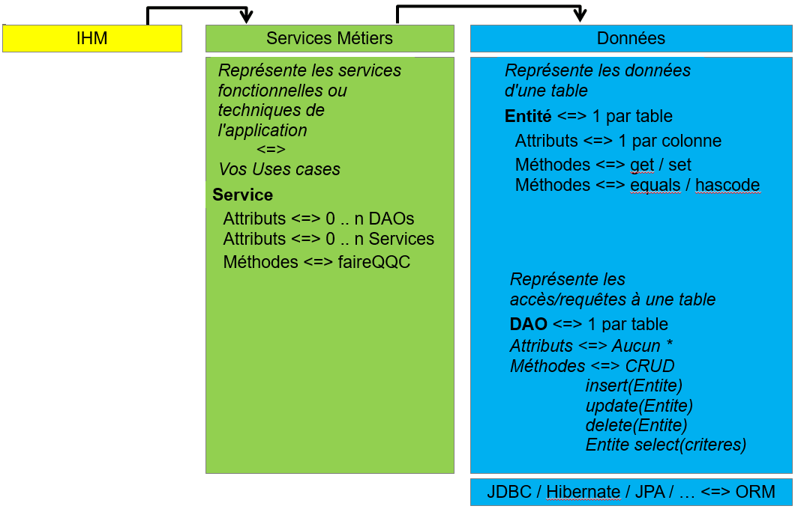

Utilisation du Spring dans un projet standard découpé en couches Services Métiers-DAOs en JDBC.
Dans le menu Eclipse, sélectionnez Fichier/Import puis Existing Maven Projects
Pointez vers le projet existant Exercice7.
Le projet est en Maven et contient toutes les dépendances nécessaires au projet.
Important : Après toutes modifications faites sur le fichier pom.xml, faites un clic droit sur votre projet puis Maven - Update Project ...
Vérifiez que tout compile.
Installer la base MySQL avec les informations nécessaires (voir répertoire db).
Lancez la méthode main pour voir ce qui se passe.
Rappel : toutes les dépendances Maven, y compris le Spring, sont décrites dans le pom.xml.
S'il n'est pas déjà présent, ajoutez un répertoire à votre projet dans src\main\resources\ :
Dans le répertoire src\main\resources\spring, si les fichiers n'existent pas, créez
:db.driver=? db.url=? db.login=? db.password=?Ajustez si besoin votre login/password.
Important : vous ne pourrez pas tester votre code tant que vous n'aurez pas fait toutes les modifications.
Les informations liées à la base de données sont utilisées dans la méthode getConnexion de la classe la classe com.banque.dao.AbstractDAO, réfléchissez à la manière de faire passer ses informations du Spring vers cette classe. Par exemple :
Implémentez votre solution, ajustez le code en fonction de votre choix.
Supprimez les constantes qui sont dans l'interface com.banque.IDAO, elles sont maintenant dans votre fichier properties.
Nous venons de modifier la classe mère des DAO, maintenant regardez les 3 DAOs enfants de l'application, au vu d'un passage à Spring, voyez-vous du code à modifier ?
Déclarez les DAOs dans le fichier spring/data-context.xml. Il y a 4 bean à déclarer.
Faites usage de l'héritage entre bean lors de vos déclarations (attribut parent et abstract de la balise bean).
En fonction de la solution que vous avez pris, n'oubliez pas de déclarer dans le fichier data-context.xml le bean qui charge le fichier properties.
Dans le code actuel, les DAOs sont instanciés par les constructeurs dans les classes services.
Nous allons les liés aux services métiers via Spring, retirez des services toutes les instanciations de DAO (tous les new xxxDAO() qui se trouvent dans le code des constructeurs de services).
Les services seront à déclarer dans un le fichier Spring service-context.xml (car ils n'ont pas de lien avec la base de données)
Il y a 4 beans à déclarer. Faites usage de l'héritage entre bean si vous pensez que cela est utile lors de vos déclarations XML.
Ils seront liés à vos DAO, via une <property> ou un <constructor-arg> (à vous de choisir, get/set ou paramètre de constructeur).
N'oubliez surtout pas de déclarer les liens entre vos DAO et vos services dans ce fichier.
Editez votre classe com.banque.Main afin qu'elle charge vos fichiers Spring dans un contexte.
ClassPathXmlApplicationContext appContext = null; try { appContext = new ClassPathXmlApplicationContext("spring/*-context.xml"); ...
Les deux fichiers seront chargés dans le même objet contexte.
Au lieu d'instancier vos beans services, demandez au contexte spring de les récupérer. Donc plus de new XxxxService(), mais des appels à appContext.getBean(...) à la place. Il y a 3 getBean à mettre.
Pensez à fermer votre contexte Spring quoi qu'il arrive.